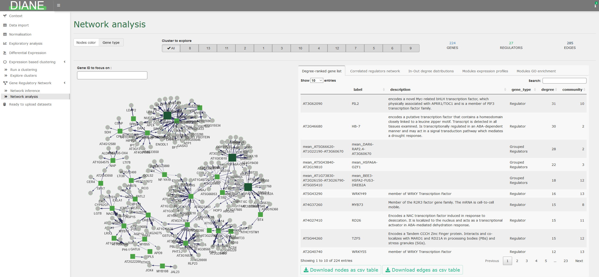

DIANE is a R-Shiny application for the analysis of high throughput gene expression data (RNA-Seq). Its function is to extract important regulatory pathways involved in the response to environmental changes, or any perturbation inducing genomic modifications.
Given the popularity of combinatorial approaches in experimental biology, we designed this tool to process, explore, and perform advanced statistical analysis on multifactorial expression data using state of the art methods. It includes :
Raw count data pre-processing and normalization
Differential expression analysis and results visualization (Volcano plots, heatmaps, Venn diagrams…)
Gene ontology enrichment analysis
Expression based clustering in the framework of Mixture Models, and individual characterization of those clusters (generalized linar models and GO enrichment analysis).
Machine learning based Gene Regulatory Network inference and interactive network analysis, community discovery, transcription factor ranking…
Session reporting and results to download at each step of the pipeline
Demonstration on a published dataset, and other ready to explore datasets on several organisms
All of the features in DIANE are accessible via a single page Shiny application that can be locally launched, or used online at https://diane.bpmp.inrae.fr.

For users more familiar with R programming, all server-side functions in DIANE are exported so they can be called from R scripts. Those functions documentation can be found in the Reference, and are illustrated in the corresponding vignette
To cite DIANE in publications use:
Cassan, O., Lèbre, S. & Martin, A. Inferring and analyzing gene regulatory networks from multi-factorial expression data: a complete and interactive suite. BMC Genomics 22, 387 (2021). https://doi.org/10.1186/s12864-021-07659-2
A BibTeX entry for LaTeX users is
@Article{cassan2021Inferring,
title = {Inferring and analyzing gene regulatory networks from multi-factorial expression data: a complete and interactive suite},
author = {Océane Cassan and Sophie Lèbre and Antoine Martin},
journal = {BMC Genomics},
year = {2021},
volume = {22},
number = {387},
url = {https://bmcgenomics.biomedcentral.com/articles/10.1186/s12864-021-07659-2}}DIANE relies on R >= 4.0.1, available for all OS at https://cloud.r-project.org/.
Download and install DIANE in your R console as follows (you need the remotes package installed install.packages("remotes")) :
remotes::install_github("OceaneCsn/DIANE")You can then launch the application :
library(DIANE)
DIANE::run_app()In case your expression input file exceeds 5MB, you may need to run the command options(shiny.maxRequestSize=30*1024^2) before calling DIANE::run_app() to upload up to 30BM.
Once the application is launched, if the resolution poorly fits your screen, you can adjust it with the keyboard shortcuts ctrl + or ctrl - (use cmd on Mac).
We provide a solution based on Docker and Shiny server to deploy DIANE on any linux server, just as it is at https://diane.bpmp.inrae.fr. To do so, see the following command line instructions.
Get DIANE source code via Git :
git clone https://github.com/OceaneCsn/DIANE.gitInstall Docker engine, as described in the Docker docs.
Go to DIANE’s folder.
First, you can change the default settings for the dockerized shiny-server by editing the file shiny-customized.config (like changing the port, the user to run with, and more)
Now let’s build the image, that we’ll name diane, from the Dockerfile (superuser rights required).
cd DIANE
docker build -t diane .This might take a while. You can check that the container image was built with docker images. Then, you can start the container diane, by setting appropriately the following options in the above command:
/path/to/app/on/host/ is the path to DIANE on the host, that is to say the location where you cloned it, containing the app.R file. /path/to/logs/on/host/ is the folder you want to store your app logs.
-p 8086:8086 is the port to use, change the first 8086 to use another one on the host.
--user shiny allows to run as non root, with the shiny user that must have been created before, and granted rights to the folder /path/to/app/on/host/logs and /path/to/logs/on/host/.
-d --rm are options for the detached mode.
Plus, in the following example, a session of DIANE will be allowed to use 16 CPU cores :
docker run -d --cpus 16 --user shiny --rm -p 8086:8086 -v /path/to/app/on/host/:/srv/shiny-server/ -v /path/to/logs/on/host/:/var/log/shiny-server/ dianeYou can check that the container is running with docker ps.
Authors : Océane Cassan, Antoine Martin, Sophie Lèbre.
Code contributions from Alexandre Soriano.